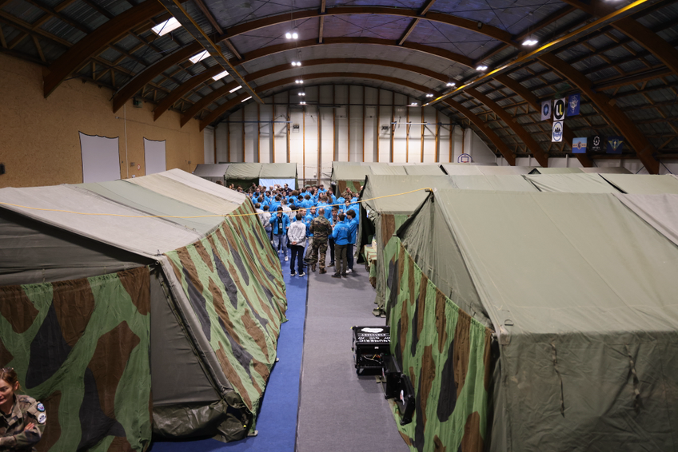

Qu'est-ce que le CHE ?
Le Cyber Humanum Est (CHE) est un exercice de cyber-guerre réaliste où plusieurs équipes s'affrontent en attaque et défense sur des infrastructures virtuelles et physiques.
Ce n'est pas un simple CTF, mais une simulation militaire de cybersécurité offensive, défensive et d'influence.
Objectifs
- Simuler des attaques et défenses dans un contexte de guerre numérique.
- Engager toutes les compétences cyber (SCADA, IoT, réseau, forensic, pentest, etc.).
- Encadrer les participants avec une structure militaire et un commandement précis.
Qui organise le CHE ?
Le CHE est encadré par :
- Des réservistes militaires, spécialistes en cyberdéfense.
- Des enseignants et chercheurs en cybersécurité.
- Des partenaires industriels du domaine.
- Des alumni et experts bénévoles.
Où et Quand ?
L'édition CHE 2025 s'est déroulée au Gymnase de Polytech Nancy.
Les phases de l'événement s'étendent du 10 octobre 2024 au 31 janvier 2025, en suivant 6 grandes étapes :
- Phase 1 - Kick-off (10 octobre 2024) : Présentation officielle du scénario, des équipes et des objectifs de l'exercice.
- Phase 2 - CTF de chauffe (10 octobre 2024) : Découverte des compétences de chacun ainsi que de l'ambiance CTF.
- Phase 3 - Préparation (janvier 2025) : Organisation des équipes, entraînement et rencontres.
- Phase 4 - Exécution de l'exercice (27 au 29 janvier 2025) : Conduite des opérations de cyberdéfense et cyberattaque en conditions réelles.
- Phase 5 - Analyse et retour d'expérience (30 janvier 2025) : Débriefing détaillé des stratégies, des réussites et des améliorations potentielles.
- Phase 6 - Clôture et remise des prix (31 janvier 2025) : Cérémonie de fin, valorisation des meilleures équipes, remerciements aux partenaires et forum des métiers.
